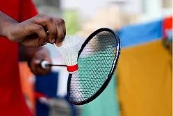
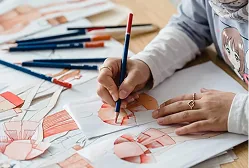
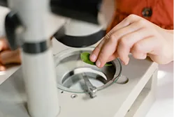
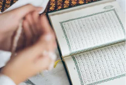
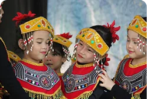
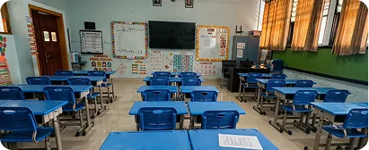
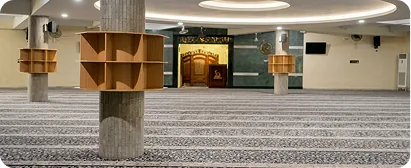
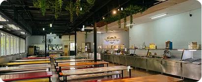

Pilar Kurikulum
Pilar Kurikulum
Sekolah Menengah Atas (SMA)
Pembinaan Spiritual
Menguatkan karakter siswa melalui pembiasaan ibadah, Tadarrus, Tahfidz, Tilawati, kultum, dan kegiatan sosial keagamaan.
Kesiapan Akademik
Mempersiapkan siswa untuk melanjutkan pendidikan melalui penguatan akademik dan kemandirian.
Wawasan Global
Memperluas pengalaman siswa melalui program bahasa, budaya, short course, dan kemitraan dengan institusi luar negeri.
Bakat & Karier
Mengembangkan potensi siswa di bidang teknologi, bahasa, seni, sains, olahraga, desain, fotografi, dan coding.
Program Unggulan
Program Unggulan
Sekolah Menengah Atas (SMA)
Tadarus
Al-Quran
Membiasakan siswa membaca Al-Qur'an secara rutin untuk menguatkan keimanan kepada Allah.

Alazka Islamic
Festival
Mengembangkan kreativitas dan wawasan keislaman melalui rangkaian kegiatan yang edukatif dan inspiratif.

Malam Bina Iman &
Taqwa (MABIT)
Menguatkan keimanan, kedisiplinan, dan kebersamaan siswa melalui pembinaan spiritual yang terarah.

Tadzhabur
Al-Quran
Mengajak siswa memahami, merenungkan, dan menerapkan nilai-nilai Al-Qur'an.
Amaliah
Ramadhan
Membiasakan siswa menjalankan ibadah, berbagi, serta peduli di bulan Ramadan.
Santunan Adik
Asuh
Menumbuhkan kepedulian sosial melalui kegiatan berbagi dan membantu sesama.
Pengajian &
Silaturahmi Kelas
Mempererat hubungan siswa, guru, dan orang tua melalui kegiatan keagamaan.
Shalat Dhuha
Sebelum Belajar
Membiasakan siswa memulai kegiatan belajar dengan ibadah dan kesiapan spiritual.
Ekstrakurikuler Unit
Ekstrakurikuler & Intrakurikuler
Sekolah Menengah Atas (SMA)

Bulu Tangkis
Melatih kelincahan, koordinasi, fokus, dan sportivitas.

Vocal
Melatih pernapasan, kepekaan nada, dan keberanian tampil.

Band
Melatih kemampuan bermusik, kreativitas, dan kekompakan.

Futsal
Melatih kelincahan, kerja sama tim, sportivitas, dan kemampuan motorik.

Fashion Design
Mengenalkan proses merancang busana dengan kreativitas anak.
Coding
Melatih logika, kreativitas, dan kemampuan memecahkan masalah.

Sains Experiment
Mengajak siswa memahami sains melalui percobaan sederhana.

Tahfidz Al-Quran
Membimbing siswa menghafal Al-Quran secara bertahap.

Bahasa Jepang
Mengenalkan kosakata, percakapan dasar, serta budaya Jepang.

Tari Saman
Melatih kekompakan, ritme, dan apresiasi budaya Indonesia.
Fasilitas Unit
Fasilitas Unggulan
Sekolah Menengah Atas (SMA)

Fasilitas 1Ruang Kelas
Menciptakan suasana belajar yang interaktif dan nyaman.

Fasilitas 2Masjid Sekolah
Menumbuhkan iman dan akhlak melalui lingkungan ibadah yang nyaman.
 Fasilitas 3
Fasilitas 3Studio Musik
Mengembangkan kreativitas dan bakat dalam bermusik.
 Fasilitas 4
Fasilitas 4Perpustakaan Anak
Menghadirkan ruang membaca untuk menumbuhkan literasi.
 Fasilitas 5
Fasilitas 5Lapangan Olahraga
Ruang aktif untuk berolahraga dan membangun sportivitas.
 Fasilitas 6
Fasilitas 6Kolam Renang
Mendukung kebugaran dan keterampilan berenang dengan aman.
 Fasilitas 7
Fasilitas 7Greenhouse Anak
Mengenalkan kepedulian lingkungan melalui pembelajaran langsung.

Fasilitas 8Kantin Anak
Menyediakan makanan bergizi dalam lingkungan yang nyaman.
Fasilitas 9
UKS
Memberikan layanan kesehatan dasar, pertolongan pertama, serta edukasi pola hidup bersih dan sehat.
Daftarkan Putra-Putri Anda
Bergabunglah dengan keluarga besar Al-Azhar Kelapa Gading dan buka potensi terbaik ananda sejak usia dini.